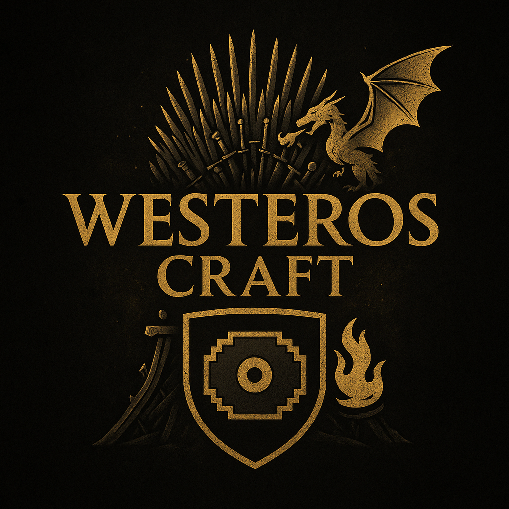

Music mod
Do you like
Game of Thrones music?
This mod is for you!
Here are 5 of the best Music from the GoT universe in a resource pack format — meaning you can use it even on servers or realms!
Included Music Discs:
- Block = Targaryen
- Cat = Lannister
- Far = Game of Thrones (Intro - Season)
- Strad = Stark
- 13 = Raise of Kastmer